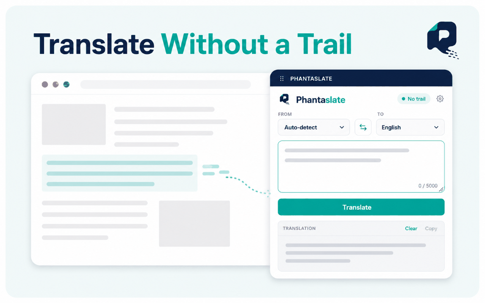
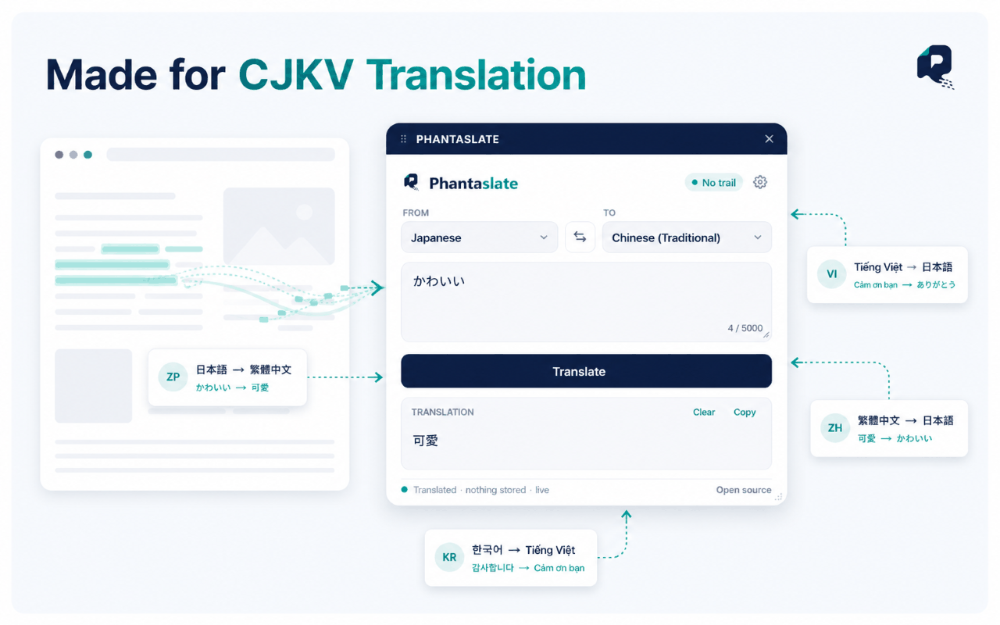

Translatewithout a trail
Your words pass through. Nothing else does. No history, no account, and no record that you were ever here.
Free forever · open source · nothing to sign up for
Chrome Web Store listing is on the way
Translation
Demo panel · nothing sent, nothing stored
- Free forever
- Stateless by design
- Open source
How it works
Paste. Translate. Gone.
Three steps, and the third one is the point. Here is exactly what happens to your text on the way through.
STEP ONE
You submit text
Only what you type or paste is sent. Pages you are simply reading are never scanned or transmitted.
STEP TWO
The relay passes it through
Your text is held in memory for the length of the request and forwarded to a translation model. Nothing is written to disk, to a database, or to a log.
STEP THREE
The translation returns
You get your result and the request ends. There is no history to open and nothing to delete, because there is nothing there.
Why stateless
Nothing stays. That's the point.
Most translators keep what you translate. That is a design decision rather than a technical requirement, and it has consequences: anything stored can be read by whoever runs the service, exposed in a breach, or handed over on request.
Phantaslate removes the storage instead of promising to guard it. There is no archive to search, no history to export, and nothing to disclose.
Producing a translation does mean your text reaches a machine-translation provider, and once it does, that provider's own practices apply. We say so plainly rather than leave it out. Everything on our side of that boundary is set out in full in the privacy policy.
What Phantaslate doesn't have
- A translation history
- Saved phrases or a synced library
- Analytics, trackers, or advertising
- A profile built from what you translate
- Application logs of your text
The browser extension
Translate anywhere you read
A panel you can drag where you want it, on any page, without leaving the tab you're in. It stays open while you work and remembers its position and size.

Made for CJKV
Nine languages, done properly
Chinese in both scripts, Japanese, Korean and Vietnamese are treated as first-class rather than as afterthoughts — including translating directly between them instead of pivoting through English.
If your text isn't in the language you selected, Phantaslate notices, tells you, and offers to switch.
- English
en - 简体中文 Chinese (Simplified)
zh-Hans - 繁體中文 Chinese (Traditional)
zh-Hant - 日本語 Japanese
ja - 한국어 Korean
ko - Tiếng Việt Vietnamese
vi - Español Spanish
es - Français French
fr - Deutsch German
de
Plus auto-detect. Russian and Arabic, with right-to-left rendering, are candidates for a later release.

Built in the open
Don't take our word for it
Every claim on this page can be checked against the code, including the relay that handles your text. The hosted relay runs the same code published in the repository — that's the point of publishing it. If something here doesn't match what the source does, open an issue.
- extensionManifest V3
- relayFastAPI · stateless
- databasenone
- content loggingdisabled
- self-hostingsupported
On the way
The same architecture, on more of your devices
The extension is the first of a family of Phantaslate apps. Each one keeps the same promise about what happens to your words.
- Android
- iOS
- Windows
- macOS
- Linux